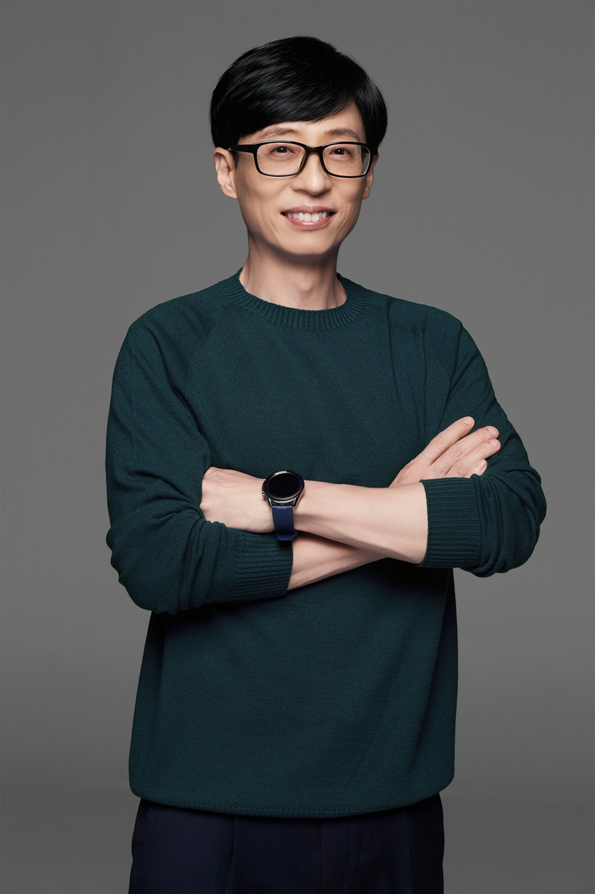

목차
개요
인기 및 위상
방송활동
활동 내역
방송 경력
DY 엔터테인먼트 사건
수상 내역
특징
음악활동
인품 및 우상
기부
동료들과의 에피소드, 그리고 미담
기타 에피소드
대인관계
별명
부캐
팬덤
광팬
안티
거짓루머
프로포폴
사건 연루 루머
신천지
연관 루머
어록
부정적평가
여담
유재석
劉在錫 ｜ Yu Jae-seok

출생
1972년
8월 14일
(50세)
서울특별시
성북구
수유동
(現
서울특별시
강북구
수유동
)
[10]
거주지
서울특별시
강남구
압구정동
국적
대한민국
본관
강릉 유씨
(江陵 劉氏)
직업
MC
,
코미디언
,
가수
[11]
신체
178cm
[12]
, 61kg
[13]
,
B형
[14]
, 270mm
가족
아버지
(1943년생)
, 어머니 신창숙
(1947년생)
[15]
, 1남 2녀 중 첫째
배우자
나경은
(2008년 7월 6일 결혼 ~ 현재)
[16]
장남 유지호
(2010년 5월 1일생)
[17]
장녀 유나은
(2018년 10월 19일생)
[18]